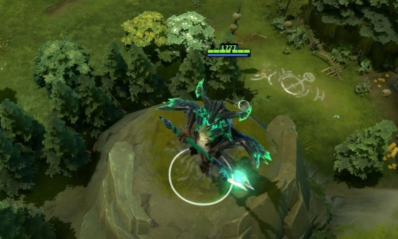
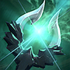
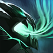
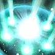

 殁境神蚀者
殁境神蚀者
背景故事
一个高傲且强横的种族中的一员，先兆者，徘徊于虚空裂隙，他是整个世界与创世深渊之间唯一的卫士。在这充斥着星体残片的殁境中，他凝视着天穹，警觉的提防着繁星之外那无底深渊中的任何骚动。在他非凡的智慧中，深藏着对先兆的敏锐洞察力和强烈共鸣，他心中那曲黑暗的协奏曲暗示着：总有一天，在这深渊之中，在那造化之外，会有某种东西醒来，并且注意到我们的世界。由于太专注于监视星体，殁境神蚀者对太阳附近的事件并不关心。然而，随着遗迹发出战争的召唤，随着心中那潜在的危机感不断扩大，殁境神蚀者展开双翼，向着我们的世界飞来。在预言中，先兆者的地位不言而喻：他的出现即是灾厄的征兆。何况，他已然亲临。
奥术天球 根据使用此技能后的魔法值计算附加伤害。 魔法消耗：100/120/14
冷却时间：0
|
星体禁锢 被禁锢的单位将会在小地图上不可见，并且处于无敌状态。 魔法消耗：120/140/16
冷却时间：22/18/14/1
|
精气光环 当附近友方英雄或殁境神蚀者自己使用技能时，有一定概率回复自身魔法上限一定百分比的魔法值。同时被动增加殁境神蚀者的魔法上限。一些没有冷却时间的技能和切换型的技能不能触发精气光环。 除了奥术天球，大多数没有冷却时间的技能都不能触发精气光环。 魔法消耗：0
冷却时间：0
|
神智之蚀 释放出一道神智冲击波，受作用英雄将损失最大魔法值的40%，并且还将受到伤害，伤害数值取决于英雄与殁境神蚀者的智力之差。如果有敌方英雄的智力等于或高于殁境神蚀者，那神智之蚀不会对其造成伤害。神智之蚀可以影响星体禁锢中的单位。可用神杖升级。 魔法消耗：175/250/32
冷却时间：160
|